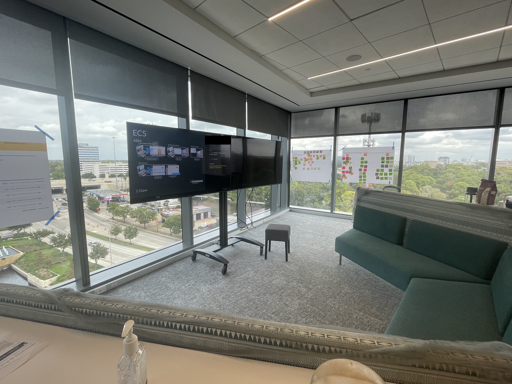

Hello
I'm
Carson G
A Professional
-
Project Manager and Scrum master

About Me
Over 6 year's of project manager experience.
I'm committed to on-time project delivery, optimizing infrastructure, and uniting developers with stakeholders.
Location
Miami, Florida
Currently residing in Pembroke Pines FL, born and raised in the sunshine state.
Education
A.S in Computer Science ( Computer adminstriation and networking)
Expert in the sectors of Healthcare, Finance, Tech and oil and gas.
Certications
PMP CSM Security +
Leadership & Philanthropy
Board Treasure - Blacc FL
Feeding South Florida Volunteer
Project innovate - Program Mentor

Project Management
Here are some recent outstanding projects I have charted and implimentated new products.
Project Manager
Phase 1 & Phase 2

Before - Phase 1
Av Deployment Project
My Role: Led the project as the primary project manager using MS Project for detailed scheduling and Jira for task tracking.
Coordinated with internal IT teams, vendors (Cisco and Microsoft), and external developers to manage installations.
Implemented Agile methodology, using sprints for iterative progress across multiple office locations.
Managed cross-functional teams of up to 50 people, ensuring that all stakeholders were aligned with the project goals and timelines.
Scope: Full deployment across Houston, Cambridge, Louisiana, and Canada.
Duration: 6 months | Estimated Cost: $6.4 million

Contact Me
I've worked on so many projects and I cant wait to work with you.
Anything from major deployments to software developments.